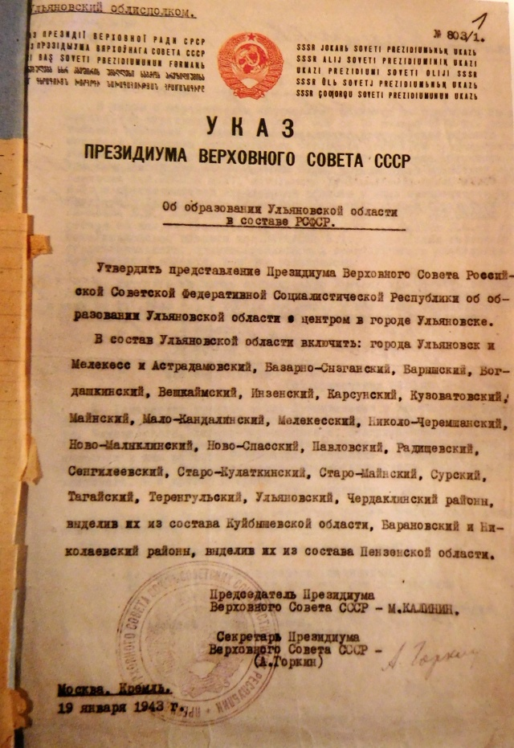
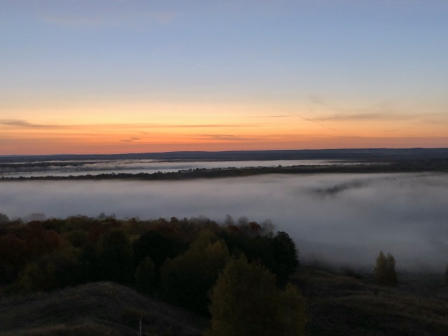
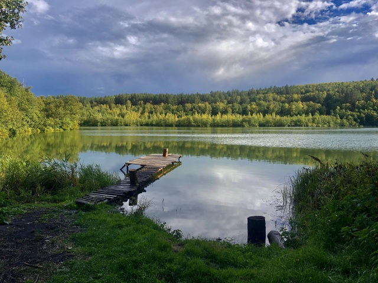

Январь 1943-го: на карте появилась Ульяновская область
Всю войну, да и всю свою ульяновскую жизнь Алька Радыльчук, Альберт Васильевич, прожил в доме на Тухачевского, 38. Дом, построенный до войны, внушал жильцам особую гордость – в нём было четыре этажа! «Ульяновск же был райцентром, в Куйбышевской области, тут выше трёх этажей, я слышал, не позволялось строить по статусу, - объяснял Альберт Васильевич. - Ну, мы же училище связи, уникальное в своём роде! Могли себе позволить исключение. И ещё – завод Володарского, союзного подчинения: те, вообще, отгрохали пять этажей!».
Время встречать рассвет! Куда ульяновцам нужно поехать в выходные
Каждый рассвет уникален. Мало что может сравниться по красоте с тем мгновением, когда первый солнечный луч появляется из-за горизонта, а затем все вокруг наполняется тёплым светом. Мы продолжаем цикл материалов «Симбирская кругосветка» - на этот раз вы узнаете, где самое лучшее место в Ульяновской области, чтобы встретить новый день.
Юловское озеро, сказочный родник и "гуляющий" храм: что стоит обязательно посмотреть в Инзенском районе
Разноцветные леса, небеса, каждую минуту меняющие свой драматический окрас, золотые холмы и лавины красных кленовых листьев... Осень – красивейшее время года. Поэтому прежде чем уйти в зимнюю спячку, советуем насладиться всем этим великолепием в полной мере. В цикле материалов «Симбирская кругосветка» доказываем: у нас в регионе действительно есть что посмотреть. А начинаем мы экскурсию по просторам Ульяновской области с Инзенского района, который поразит вас своими локациями.